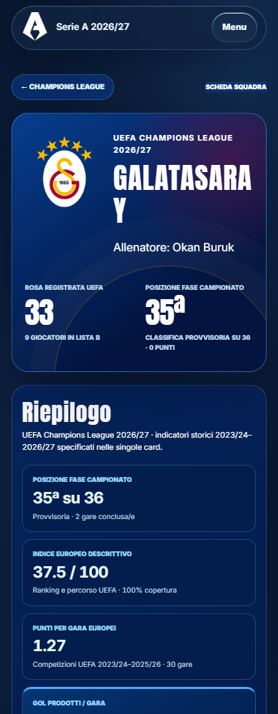
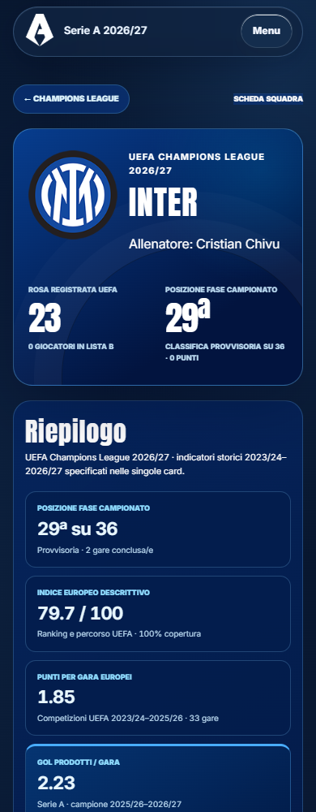
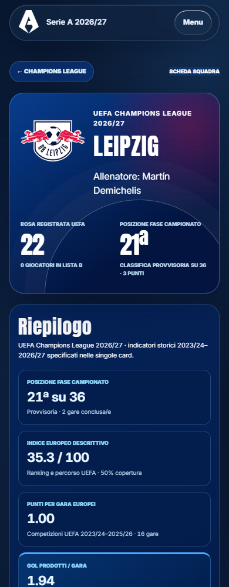
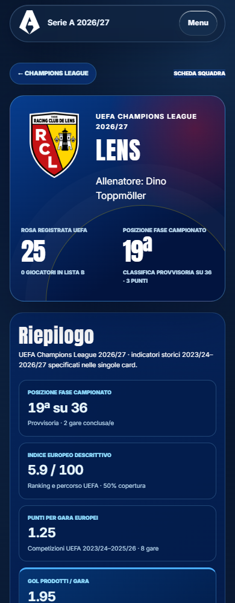

<style>body{margin:12px;background:#d7e0e8;font:15px system-ui}main{display:grid;grid-template-columns:repeat(4,1fr);gap:12px}figure{margin:0;min-width:0}figcaption{height:40px;font-weight:600}img{width:100%;height:auto;display:block}</style><main><figure><figcaption>48 · champions-league.html?team=galatasaray</figcaption></figure><figure><figcaption>49 · champions-league.html?team=inter</figcaption></figure><figure><figcaption>50 · champions-league.html?team=lask</figcaption></figure><figure><figcaption>51 · champions-league.html?team=leipzig</figcaption></figure><figure><figcaption>52 · champions-league.html?team=lens</figcaption></figure><figure><figcaption>53 · champions-league.html?team=lille</figcaption></figure><figure><figcaption>54 · champions-league.html?team=liverpool</figcaption></figure><figure><figcaption>55 · champions-league.html?team=manchester-city</figcaption></figure></main>